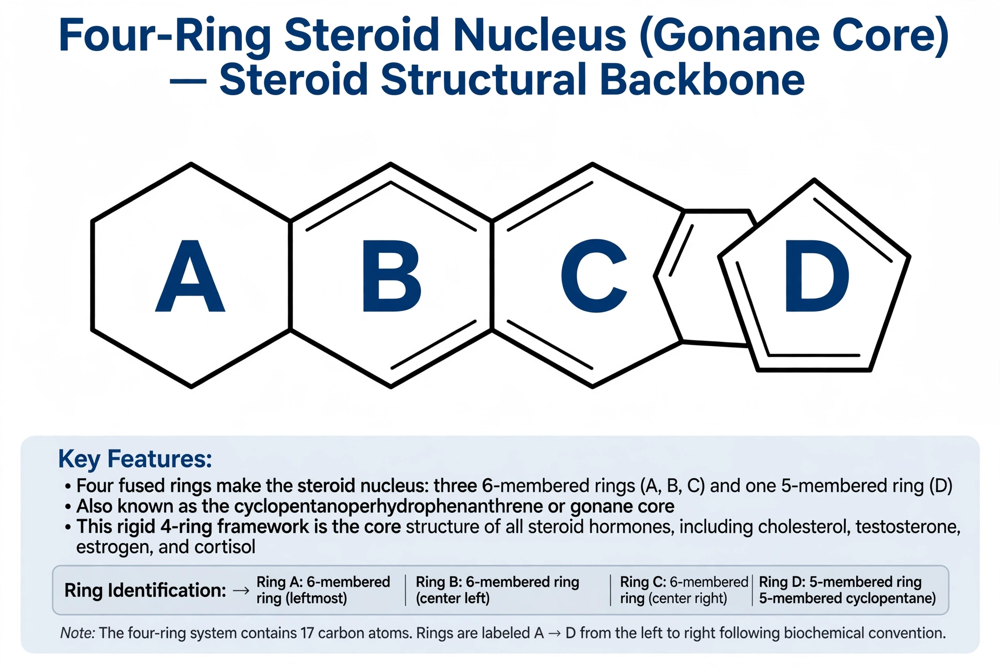

A steroid is an organic compound with four fused rings arranged in a specific molecular configuration: three six-membered cyclohexane rings and one five-membered cyclopentane ring (the gonane or cyclopenta[a]phenanthrene skeleton). Steroids vary in the functional groups attached to this core and in the oxidation state of the rings. Hundreds of steroids occur in plants, animals, and fungi, and all are derived from the sterol precursor lanosterol or cycloartenol.

| Steroid | |
|---|---|
| Type | Organic compound / lipid |
| Core structure | Gonane: 3 cyclohexane rings + 1 cyclopentane ring, 17 carbons |
| Precursor | Lanosterol (animals/fungi), cycloartenol (plants) |
| Examples | Cholesterol, cortisol, testosterone, estradiol, bile acids |
The steroid nucleus consists of 17 carbon atoms in four rings conventionally labelled A, B, C, and D. Rings A–C are six-membered; ring D is five-membered. Steroids are classified by their carbon count and side chains: cholestanes have 27 carbons, androstanes 19, and estranes 18. Cholesterol, the most familiar sterol, is the biosynthetic precursor of all steroid hormones.
Synthetic steroids are widely used drugs. Corticosteroids such as prednisone and hydrocortisone suppress inflammation and the immune system and are used for conditions from asthma to autoimmune disease. Anabolic-androgenic steroids, synthetic derivatives of testosterone, are prescribed for hormone deficiency but are also misused for performance enhancement in sport, where they are banned. Note that cholesterol-lowering statins act upstream of steroids by blocking the pathway that produces cholesterol, but are not themselves steroids.
Steroids are synthesised from acetyl-CoA through the mevalonate pathway: squalene is cyclised to lanosterol, which is then converted to cholesterol and onward, in the adrenal glands, gonads, and other tissues, to the various steroid hormones. Enzyme defects in this chain cause disorders such as congenital adrenal hyperplasia.